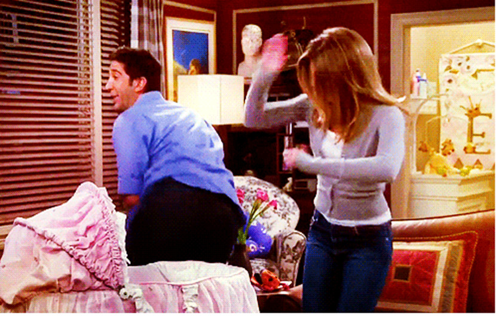

Na nona temporada, Ross e Rachel têm uma discussão sobre morarem
juntos. Rachel decide mudar-se novamente
para a casa de Joey, levando sua filha Emma consigo. O emprego
de Chandler começa a requerer que ele passe a maior parte da
semana em Tulsa, Oklahoma. Ele aguenta por algum tempo,
mas logo pede demissão
e procura um emprego na área de publicidade.
Phoebe começa a namorar um
homem chamado Mike Hanigan, mas se desentendem por Mike não querer casar.
O grupo vai a Barbados, onde
Ross participará como palestrante de um seminário.
Phoebe leva sua antiga paixão, David, e Mike
decide ir até Barbados e pedir Phoebe em casamento
antes de David. Joey e Charlie terminam e logo em
seguida Joey descobre que Rachel gosta dele.
Melhores episódios:
- "Aquele em que Ninguém Faz o Pedido" (09x01)
- "Aquele com a Canção Inadequada do Ross" (09x07)
- "Aquele com os Ratos da Phoebe" (09x12)
- "Aquele do Memorial" (09x17)
- "Aquele em Barbados" (09x23/24)
